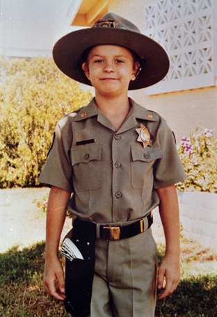

About Us

Our History
The Make-A-Wish-Foundation Singapore was founded in April 2003 as an affiliate of a global organisation spanning more than 30 countries around the world. The original concept of the organisation goes all the way back to the 1980s in Arizona when a team of people granted the wish of a little boy named Christopher, whose dream was to be a policeman.
Christopher suffered from leukemia and was not be able to survive for long. Hence, the group wanted to help fulfill the boy's wish to be a policeman with the help of the local police. Christopher managed to ride in a police helicopter, be sworn in as an honorary patrolman and was even given a specially-made uniform.
Most importantly, the group who helped fulfill Christopher's last wish were greatly moved by the entire process and experience and went on to found what is known today as the Make-A-Wish Foundation of America. As of 2015, more than 350,000 wishes have been granted worldwide, with around 1,000 in Singapore.
Our Mission
"We grant the wishes of children with life-threatening medical conditions to enrich the human experience with hope, strength and joy."Since the granting of Christopher's wish, the mission of the organisation has always been to grant the wishes of children with life-threatening medical conditions to enrich the human experience with hope, strength and joy.
However, Wishes are not just gifts. They impact everyone involved - wish kids, donors, volunteers and more. Everyone has something to learn and to gain from the process of wish-granting. For wish kids, the act of making their wish come true can provide them with courage to face their medical conditions and the treatments. Likewise, parents are also more optimistic when their kids are motivated.